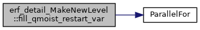
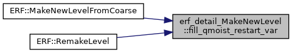
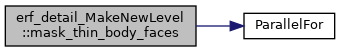

- Generated by
 1.9.1
1.9.1
|
ERF
Energy Research and Forecasting: An Atmospheric Modeling Code
|
Functions | |
| void | fill_time_average_sum (MultiFab &new_sum, const MultiFab *old_sum, double fine_cnt, const MultiFab *crse_sum, double crse_cnt, const Geometry &crse_geom, const Geometry &fine_geom, const IntVect &ratio) |
| void | fill_qmoist_restart_var (MultiFab &dst, const MultiFab *old_mf, const MultiFab *crse_mf, const Geometry &crse_geom, const Geometry &fine_geom, const IntVect &ratio) |
| void | mask_thin_body_faces (iMultiFab &imask, const Vector< IntVect > &faces, int dir, const char *name) |
| void erf_detail_MakeNewLevel::fill_qmoist_restart_var | ( | MultiFab & | dst, |
| const MultiFab * | old_mf, | ||
| const MultiFab * | crse_mf, | ||
| const Geometry & | crse_geom, | ||
| const Geometry & | fine_geom, | ||
| const IntVect & | ratio | ||
| ) |
Referenced by ERF::MakeNewLevelFromCoarse(), and ERF::RemakeLevel().


| void erf_detail_MakeNewLevel::fill_time_average_sum | ( | MultiFab & | new_sum, |
| const MultiFab * | old_sum, | ||
| double | fine_cnt, | ||
| const MultiFab * | crse_sum, | ||
| double | crse_cnt, | ||
| const Geometry & | crse_geom, | ||
| const Geometry & | fine_geom, | ||
| const IntVect & | ratio | ||
| ) |
Referenced by ERF::MakeNewLevelFromCoarse(), and ERF::RemakeLevel().
| void erf_detail_MakeNewLevel::mask_thin_body_faces | ( | iMultiFab & | imask, |
| const Vector< IntVect > & | faces, | ||
| int | dir, | ||
| const char * | name | ||
| ) |
Set the thin-body flux mask to 0 on the listed faces. The mask lives in the default arena, which is device memory on GPU builds, so the faces are copied to the device and set in a kernel; the diagnostic print loops over the host list and reads no device memory.
Referenced by ERF::init_thin_body().
